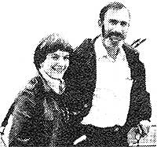

Paul Ehrlich (Bing Professor of Population Studies and Professor of Biological Sciences, Stanford University) and Anne Ehrlich (Senior Research Associate, Department of Biological Sciences, Stanford) are familiar names to ecologists and environmentalists everywhere. As well they should be. Because it was Paul and Anne who-through their writing and research-gave special meaning to the words "population", "resources" ; and "environment" in the late 1960's. (They also coined the term coevolution, and did a lot to make ecology the household word it is today.) But while most folks are aware of the Ehrlichs' popular writing in the areas of ecology and overpopulation (most of us-for inatance-have read Paul's book The Population Bomb) . . . far too few people have any idea of how deeply the Ehrlichs are involved in ecological research (research of the type that tends to be published only in technical journals and college textbooks). That's why it pleases us to be able to present-on a regular basis-the following semi-technical column by authors/ecologists/educators Anne and Paul Ehrlich.
The year 1979 may well prove to be the turning point in the battle over nuclear power. In January, the Nuclear Regulatory Commission (NCR) repudiated the Executive Summary of the Rasmussen Report, which had-up to that point-been a mainstay of those people who claimed that nuclear reactors were sufficiently safe to be the world's future energy source.
Then, in March, the near disaster at Three Mile Island emphasized the emptiness of the nuclear establishment's statements on reactor safety. One of the top technicians in the NCR just about said it all in a telephone call-to the Commission-from the scene of the Three Mile Island accident: "It's a failure mode that's never been studied," he claimed. "It's just unbelievable!"
Finally, in April, the controversy surrounding the "Inhaber report" began to attract public attention in the United States. Though much less dramatic than the Pennsylvania meltdown scare, this document may play an even greater role in our future energy choices.
The "Inhaber report" is a study-entitled Risk of Energy Production-written by Herbert Inhaber, Associate Scientific Advisor to the Atomic Energy Control Board of Canada (AECB). Only a few copies of the 150-page document (officially numbered AECB-1119) were circulated within the technical community, but a summary of the report was published by Inhaber in the New Scientist (a top British magazine) in May 1978 . . . and in Science (the most important North American scientific journal) in February 1979. The essence of those summaries appeared in such diverse places as the Wall Street Journal, the Washington Post, Nuclear News, the Stanford Daily, and a major speech (for the British Broadcasting Corporation) by the prominent English scientist-politician, Lord Rothschild.
Why did Inhaber's message attract so much attention? Quite simply, because he and the AECB were saying that nonconventional energy sources-such as solar power-present as great a hazard to human health as do conventional sources! Risk of Energy Production claimed natural gas to be the safest available energy source, followed by nuclear power. Solar space heating-and such other nonconventional technologies as wind generators, methanol from biomass, etc.-were all found to have substantially higher risks . . . while coal and oil were described as being the most dangerous of all.
This was quite a shot in the arm for a beleaguered nuclear industry . . . whose trade journals gleefully passed on the news that now-at last-there were some "facts" on which to base debate about future energy choices!
Unfortunately for the nuclear proponents' position, the AECB's "facts" came to the attention of our colleague, John P. Holdren . . . Professor of Energy and Resources at the University of California, Berkeley. Holdren is highly respected as an authority on the risks of energy technologies by knowledgeable people on both sides of the nuclear debate. His technical and popular articles on this subject have been published and reprinted widely . . . he's sought after as a consultant on energy's risks by governments, major laboratories, and international agencies around the world . . . and John is also the only scientist serving on the steering committees of both major studies of the risks of nuclear power that are underway in the U.S. National Academy of Sciences.
In fact, Inhaber himself cited Holdren's writings on the risks of nuclear (and other conventional) energy technologies in AECB.1119, claiming that-by relying on the work of a "well-known nuclear critic"-he was bending over backward to avoid accusations of pro-nuclear bias. This purported reliance on Holdren's work, combined with Inhaber's surprising conclusions, prompted the Berkeley professor-and some of his colleagues-to take the time to examine the AECB document carefully.
Holdren's group quickly discovered that the "Inhaber report" was flawed from end to end by ridiculous assumptions and by errors in judgment, interpretation, omission, and arithmetic. Holdren gave his view of the quality of the report succinctly: AECB-1119 was "by far the most incompetent technical document I have ever known to have been distributed by grown-ups".
In our opinion, Holdren was being too kind! Consider some examples: In his calculations on wind energy, Inhaber first misread a table in one of his sources and selected a number-to represent the amount of raw material required to construct a windpower plant-that was 50 times too high! He then confused the figures for such a plant's lifetime output with those for its annual output, thus inflating his material requirements by a further factor of 20. At this point, the report's figures showed that 380,000 tons of steel would be required to construct a wind generator with a rated capacity of four electrical megawatts (4 Mwe) . . . which is about 1/200 the megawattage of the largest coal-fired unit in a modern power plant. Since 380,000 tons is the equivalent of about 150,000 1979 Pontlacs -which, if lined up bumper to bumper, would stretch more than 700 miles-one might expect that Inhaber (or someone else in the AECB) would have been suspicious of the calculation. A little farther on, however, the author once again confused annual and lifetime output, this time in the opposite direction, which left that section of the report with a net error factor of 50.
Inhaber's mistakes cover an astounding range. For example, he includes-in his risk figures-air pollution and coal mine dust levels well above the limits set, by law, for new facilities . . . and therefore of no significance to future energy choices. Although he claims that he treats all energy systems "as uniformly as possible", Inhaber includes construction risks for solar systems, but not for conventional systems . . . counts the risks for producing reinforcing rods twice (although such units come from the mill as finished products, anyway) . . . uses unjustified differences in facility lifetimes . . . and assumes that renew. able energy technologies are built and maintained largely by "roofing and sheet metal" workers (a false statement that greatly inflates his risk estimates, because "roofing and sheet metal" labor is one of the most dangerous occupational categories).
Another of Inhaber's ridiculous assertions is that rock to be used in dams-or for heat storage in solar power plants would have to be transported hundreds of miles . . . equal to the average distance that coal is transported in the U.S. today. This absurd presumption results in almost a 25-fold multiplication of one subset of risks associated with solar and hydropower plants.
However, the single most distorting assumption in Inhaber's report is that large quantities of "dirty" coal would have to be burned-as "backup" for renewable energy sources-when the sun wasn't shining or the wind wasn't blowing. Holdren describes this reasoning as "intricately fallacious".
The facts are as follows: First, any power plant used for baseload electricity production (that is, one which will be "on line" as much as possible)-whether conventional or unconventional-needs some backup capacity for those occasions when the baseload plant is out of service. The nonconventional plants treated by Inhaber have built-in energy storage, and require no more backup than conventional coal or nuclear plants (whose "stand in" requirements Inhaber ignores).
In addition, the first applications of nonconventional electricity sources almost certainly will not be as baseload plants, but as "fuel savers" . . . used to reduce the consumption of coal and oil whenever the sun and wind are available. This fact reduces net risk by an amount equal to the difference between the hazards of building and operating the renewable systems, and the (higher) dangers of getting and burning the fossil fuels that the renewables would replace. Inhaber's irrational treatment of backup-topped off by his use of outdated figures for the risks of the coal that he assumes is used to meet the reserve system requirement he has conjured up-results in most of the difference between the hazards he computes for renewables and those he attributes to nuclear power.
Because risk analysis is of crucial importance to the debate on future energy paths for the United States and the world, we will include-in MOTHER's next issue-a detailed discussion of Inhaber's errors. Anyone with a strong interest in alternate energy technologies should examine the Inhaber report (cited below) . . . as well as the follow-up "critique" which we'll present in MOTHER NO. 59. It's important that all of us try to counter the effect of the report's widely disseminated misinformation.
But the question that needs to be addressed now is: How did Risk of Energy Production come about? How could a report that would have been rejected as a term paper for an undergraduate course get through the internal reviews of the AECB and into reputable journals? With respect to the AECB, it now appears that this organization deliberately distributed-and continues to distribute- a document it knows to be hopelessly flawed. The Board originally claimed, for example, that it had received no unfavorable reviews of the draft of AECB-1119 . . . a flat-out lie that was caught by a Canadian journal, The Probe.
We now know that, even before the initial version of AECB-1119 was circulated, the report was reviewed negatively-for the AECB-by Dr. Kenneth Tupper of the Canadian National Research Council, and by Dr. Rein Lemberg of Lemberg Consultants Limited. Dr. Tupper advised the AECB against releasing the paper, but both his and Lember's recommendations were ignored.
Furthermore-since the report's release-individual scientists have repeatedly approached the Canadian Board, asking it to publicly and prominently repudiate the Inhaber study. So far the AECB has not done so, while the misinformation the report contains continues to be circulated-all over the world-through the efforts of its author.
Inhaber's own behavior has been most interesting, too. He has progressively revised AECB-1119 in attempts to cover the most obvious mistakes . . . often inserting errors as he goes. When Holdren pointed out some of the paper's more grievous blunders in a letter to Nuclear News, Inhaber responded with a two pronged strategy. On one hand, he simply denied making the errors that Holdren had correctly identified. On the other, he stated, "I would like to eliminate any errors or misstatements in the report . . . but this should be done in a rational and even-tempered manner. The scientific method of analysis, critique, and re-analysis produces the most accurate work."
In addition to claiming never to have said what is plainly in print, and then pushing off on competent researchers the job of converting a scientific sow's ear into an acceptable technical publication, Inhaber has claimed that when he has corrected errors pointed out to him by others-the revisions have made no significant difference in the report's general conclusions! For example (in the third edition of AECB-1119), Inhaber changed a mistake he had made in calculating the risks of using methanol derived from plants ("biomass") as a portable fuel. He had, at first, confused thermal (heat) energy with electrical energy, inflating his risk estimate for methanol-by roughly a factor of three-with this elementary mistake. He proudly wrote in Nuclear News that the correction "lowered the methanol risk, but did not change its overall ranking". He did not, however, mention that other errors -which pervade his entire methanol section-result in a more than 10-fold inflation of the risks involved in producing this renewable liquid fuel.
In summary, the Inhaber report is not just marred by a few failures of multiplication and addition, but rather is a complex skein of mistakes, booboos, and botches. Some of these are glaring . . . some are subtle . . . some require expertise in the energy field to detect . . . some are obvious to anyone with an ounce of technical sophistication . .. some are mutually canceling . . . and some compound each other. But every competent scientist who has examined the report in detail agrees that it should never have been issued and that its summaries should never have been published. In spite of such criticism, however, the AECB and Inhaber push on!
What, then, has given this monstrosity such wide acceptance in the scientific and popular literature? The trail leads directly back to the door of the AECB. The involvement of this Canadian government board has given the Inhaber report an aura of respectability. Perhaps the original release of AECB-1119 could have been written off as bureaucratic bungling, but the Board's subsequent "stonewalling" behavior is a classic illustration of the kinds of stupidity and dishonesty that have long permeated the nuclear establishment.
The principal response of the AECB when faced with the unvarnished truth about the Inhaber report-has been to dodge the substantive issue and accuse Holdren and other critics of mounting "a concerted program of vilification". It's a "Catch-22": If criticism is restrained and "scholarly", it's ignored . . . if it's frank, the critic is accused of vilification and his or her comments are still ignored. The AECB apparently has no interest in the truth. It has even steadfastly refused to commission someone with unquestioned credentials to review the report!
The Board wrote to us-on March 14, 1979[1] that it did not endorse the report and, therefore, could not repudiate it . . . [2] that the report compared risks on a common denominator and total-impact basis which "had never been done before" . . . and (3] that, "viewed objectively, Risk of Energy Production is no more or less than food for thought".
All three claims are patent nonsense. First, the report was "approved" and published by the AECB. Like any other publisher, the Board has both legal and ethical responsibility for the contents of its publications. Second, the report does not compare total impact . . . instead, it confines itself to computing the impacts upon public and occupational health. The report is also hardly a pioneering effort, since many earlier works have made, properly, the kinds of comparisons that Inhaber bungled. Even the approach that he seems to consider his main contribution to the subject was-in fact taken directly from previously published and unpublished reports by the Jet Propulsion Laboratory. What Inhaber has added to the JPL work are his own misreadings and mistakes.
The third claim-that the report was only "food for thought"-was dealt with in a Wall Street Journal interview by Kent Anderson, Energy Information Specialist of the U.C. Berkeley Energy and Resources Program. "Using the report as 'food for thought'," Anderson said, "is equivalent to eating garbage."
The performance of the AECB in this matter should be of prime concern to Canadian readers of MOTHER. In our view, a thorough investigation of the Board; its past and present activities, and its future usefulness (if any) is called for.
The Inhaber report is available from the Atomic Energy Control Board, P.O. Box 1046, Ottawa, Canada K1P 5S9. Ask for Risk of Energy Production, AECB-1119/REV-2.
|
 |
|
|